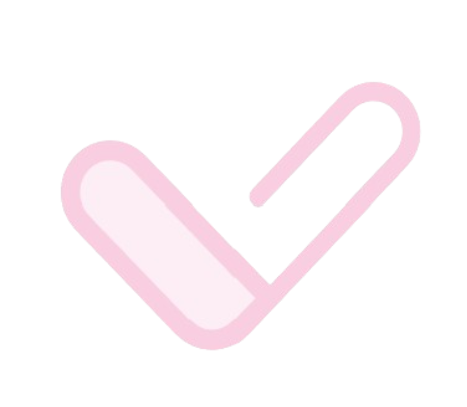

<!-- Modal Thank You by Anna Fedorenko-->
<section class="modal-thank-you" id="modal-thank-you">
  <div class="modal-thank-you__content">
    <button class="modal-thank-you__close" aria-label="Close modal">
      <svg
        class="modal-thank-you__close-icon"
        xmlns="http://www.w3.org/2000/svg"
        width="16"
        height="16"
        viewBox="0 0 16 16"
        aria-hidden="true"
        focusable="false"
      >
        <line
          x1="1"
          y1="1"
          x2="15"
          y2="15"
          stroke="currentColor"
          stroke-width="2"
          stroke-linecap="round"
        />
        <line
          x1="15"
          y1="1"
          x2="1"
          y2="15"
          stroke="currentColor"
          stroke-width="2"
          stroke-linecap="round"
        />
      </svg>
    </button>
    <div class="modal-thank-you__body">
      <div class="modal-thank-you__body-icon">
        
      </div>
      <h2 class="modal-thank-you__title">Thank you!</h2>
      <p class="modal-thank-you__subtitle">We will contact you shortly.</p>
      <button class="modal-thank-you__button">Ok</button>
    </div>
  </div>
</section>
